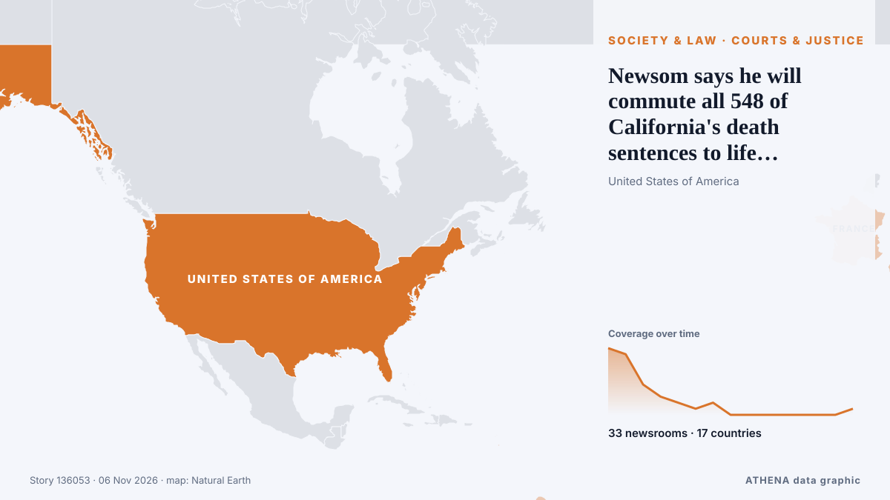

Justice et tribunaux
SponsoriséPrésenté par  Cybernetics and Artificial Intelligence Lab Welcome to the Cybernetics and Artificial Intelligence Laboratory, established at the Department of Business Administration of the National and Kapodistrian University of Athens. The lab is headed by Professor Dimitrios Thomakos. The lab aims to do research that can be published in top venues. Our research uses tools and methods of Artificial Intelligence, and lies in the following areas: - Forecasting - Decision making - Cyber security - Finance We are always looking forward to collaborating with exceptional students!
Cybernetics and Artificial Intelligence Lab Welcome to the Cybernetics and Artificial Intelligence Laboratory, established at the Department of Business Administration of the National and Kapodistrian University of Athens. The lab is headed by Professor Dimitrios Thomakos. The lab aims to do research that can be published in top venues. Our research uses tools and methods of Artificial Intelligence, and lies in the following areas: - Forecasting - Decision making - Cyber security - Finance We are always looking forward to collaborating with exceptional students!
| 24 oct. | 0 |
|---|---|
| 25 oct. | 0 |
| 26 oct. | 0 |
| 27 oct. | 0 |
| 28 oct. | 0 |
| 29 oct. | 0 |
| 30 oct. | 1 |
| 31 oct. | 0 |
| 1 nov. | 2 |
| 2 nov. | 5 |
| 3 nov. | 6 |
| 4 nov. | 5 |
| 5 nov. | 5 |
| 6 nov. | 0 |
Les titres sont affichés en anglais, tels que publiés.

Newsom says he will commute all 548 of California's death sentences to life without parole
California Gov. Gavin Newsom said Thursday that he'll change all death sentences in the state to life in prison without the possibility of parole. de PBS NewsHour
UK government defends Palestine Action ban in Supreme Court
The UK Supreme Court heard a defense from a government lawyer regarding the classification of Palestine Action as a terrorist organization. de Arab News
Mexican judge arrested over alleged $2M bribe to release Ryan Wedding's second-in-command
A Mexican judge has been arrested on allegations that he accepted a $2-million US bribe in exchange for granting bail to a man accused of acting as second-in-command to Ryan Wedding, the former… de CBC News
Top UN court to rule Nov 19 on Myanmar/Rohingya genocide case
The ICJ has spent seven years considering allegations that Myanmar's brutal repression of the Rohingya violated the 1948 UN Genocide Convention. de Free Malaysia Today
5 things to know about Nigerian professor Dapo Akande elected ICJ judge
Nigerian-born legal scholar Professor Dapo Akande has been elected as a judge of the International Court of Justice (ICJ), marking a significant milestone in his career and a diplomatic victory for… de Vanguard
Equatorial Guinea Seeks Life for Soldier
Prosecutors asked a military court in Equatorial Guinea for life in prison for a sergeant accused of killing two women. de The Rio Times
Seoul court upholds ex-president Yoon's election conviction
Former South Korean president Yoon Suk Yeol declared martial law in December 2024, ordering troops to shut down parliament, before lawmakers defied the military to vote down the decree. de CNA (Channel NewsAsia)
Dozens arrested outside Supreme Court hearing on Palestine Action ban
The banned UK group, which targets Israel's war machine, has inspired activists in Europe and beyond. de Al Jazeera English
Rickshaw driver facing trial over death of mother of two after Westlife gig
Woman was on her way to meet her husband with two friends after concert. de Irish Independent
Monfils gives emotional farewell in Paris with wish for daughter Skai
PARIS: Gael Monfils turned his tennis farewell into a message for his young daughter Skai on Tuesday, telling her he hoped she would one day play in Paris as he thanked fans in the French capital… de Business Recorder
Poland: Dispute Over Constitutional Court Escalates
Poland’s dispute over the constitutional court has escalated, with President Nawrocki blocking the swearing-in of five newly elected judges. de Kyiv Post
Kohli in the runs as India thrash New Zealand in first ODI
Dubai: Virat Kohli has the chance to move ahead of Sachin Tendulkar in three major batting records when India take on New Zealand in the upcoming ODI series, beginning on November 4. de Gulf News
US Judge Dismisses Trump Administration’s Harvard Admissions Probe Case
BOSTON: A federal judge on Monday dismissed a lawsuit by President Donald Trump’s administration seeking to force Harvard University to turn over records for an investigation into whether it… de Arab News
Famous man loses bid for injunction to stop reporting of allegations
The man brought legal action against Independent Television News (ITN) and Guardian News and Media, publisher of The Guardian. de Evening Standard (London)
Lindsay Clancy Returns to Court in a Bid to Dismiss Charges She Killed Her Three Young Children
PLYMOUTH, Mass. (AP) — Lindsay Clancy returns to court Monday in a bid to dismiss the charges that she murdered her three young children. de The Canadian Press (via CityNews)
Poland’s PM vows support for tribunal amid court crisis
Riot police have been guarding the court since Friday afternoon, with several hundred protesters gathered to demand the reinstatement of the president of the country’s Constitutional Tribunal. de Sydney Morning Herald
Trump asks Supreme Court to sideline 20,000 California mail ballots
President Donald Trump's administration appealed to the Supreme Court on Monday in its push to sideline thousands of disputed California mail ballots the day before the pivotal midterm elections. de The Korea Times
Poland's in the midst of a constitutional crisis. Here's what's happening
A decade-long dispute in Poland over one of its top courts has come to a head, with the country's prime minister and president at loggerheads, and protests outside the Constitutional Tribunal in… de CBC News
Dia Mirza Diwali appeal row: Deeply pained, says HC; asks BMC to re-upload video
The Bombay high court found the Brihanmumbai Municipal Corporation's removal of Dia Mirza's video unfortunate and requested its restoration. de Times of India